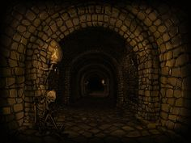

Mistérios da Mansão Esquecida

Você decide decifrar o código no tabuleiro de xadrez no salão de baile. Conforme você examina as peças e as pistas ao redor da sala, você lentamente começa a entender a lógica por trás do código. Depois de alguns momentos de concentração intensa, você decifra o código e revela-se um corredor sobrio e amedrontador.